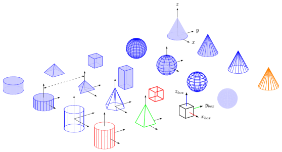
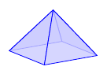
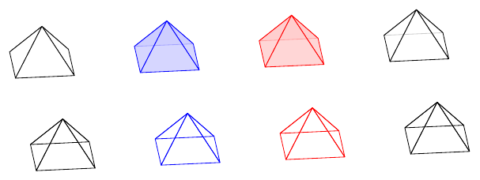
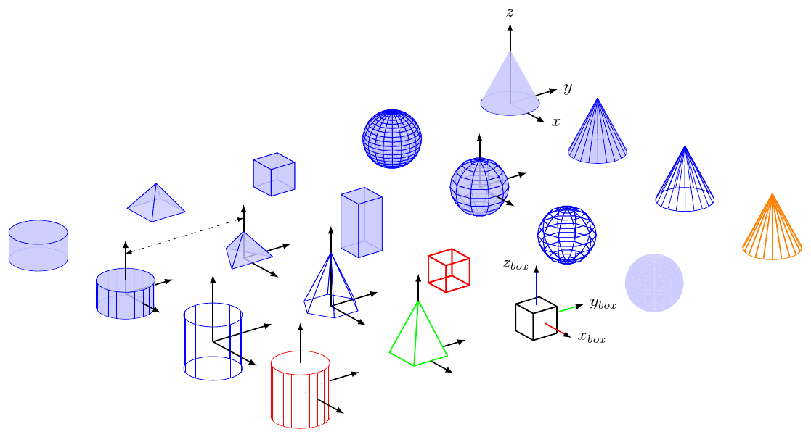
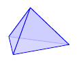
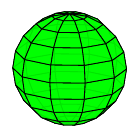
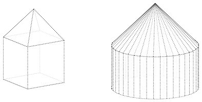
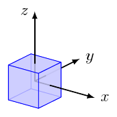
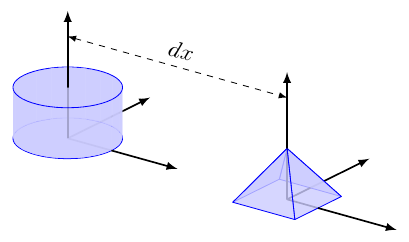
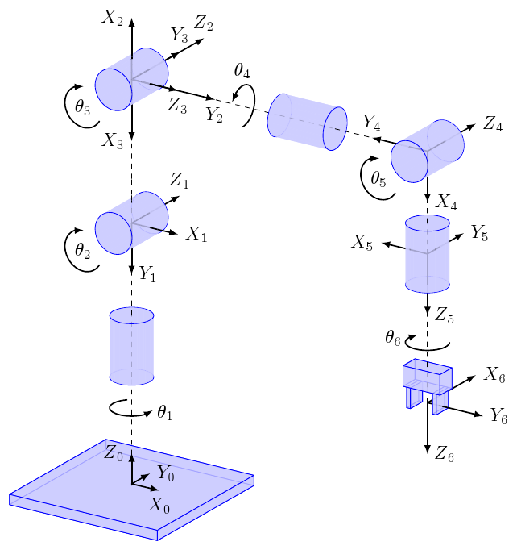

3D solids library for sketch
Author: Alex Dumitrache alex@cimr.pub.ro
License: GPL

First, you have to copy lib/ into your working folder.
Then, include lib/defaults.sk and lib/objects.sk in your file, and use language tikz in global options section. See the examples below.
def blue<>
input{lib/defaults.sk}
input{lib/objects.sk}
{pyramid}
global {
language tikz
camera view((3,-2,1), (o), [Z])
}

Save the program as pyramid.sk and compile it using -T option:
sketch -T pyramid.sk -o pyramid.tex
Now you are ready process pyramid.tex with pdflatex.
For advanced options, see the sketch manual.
You may also use sk2pdf or sk2png to obtain the PDF or PNG directly from .sk source:
sk2pdf pyramid.sk
The library defines the following constants:
(o) (x) (y) (z) - (0,0,0), (1,0,0), (0,1,0) and (0,0,1) as points[O] [X] [Y] [Z] - the same values, as vectorsThe unit vectors are useful for transformations:
rotate(30, [X])
Before including the library, you will define a tag for selecting the style. Available styles:
blue<>red<>gray<> Caveat: you may only select the style by name at before including lib/defaults.sk.
However, you may redefine style for each object.
Another option is to show the objects in wireframe (without hidden line removal):
wireframe<> You may use this option:
before including lib/objects.sk or at the beginning on the file
In this case, the entire scene will be drawn in wireframe.
For each object individually (more on this later).

Source: styles.sk
In the figure:
blue<>, red<>, gray<>wireframe<> tag definedAvailable objects:
{box}{sphere}{cylinder}{cone}{pyramid}{coordsys}
Source: basic-shapes.sk
Every object is a drawable (see sketch manual).
Simplest usage: just type the object name
{box}
For translating, rotating or scaling the object, use put:
put {translate([5,5,0]) * rotate(10, [X])}
{box}
If you want to customize the default options, or change the style for a particular object, use the alternate form:
{ input{lib/object_name} }
Examples:
Triangular pyramid
{
def n 3
input{lib/pyramid}
}

Source: pyramid3.sk
Alien sphere:
{
def style [cull=false, fill=green, fill opacity=0.9]
def segments 10
input{lib/sphere}
}

Source: sphere-custom.sk
The objects have the following options / parameters / tags:
all solid objects (box, sphere, cylinder, cone, pyramid):
def style [...]
def style [cull=false, draw=red, fill=green, fill opacity=0.9]
def wireframe<>
sphere:
def varsphere<> - alternative appearance for the sphere (experimental)
def segments - sphere resolution (default 20)
cylinder and cone:
def segments - see sphere
def generatrix<> - display the generatrix lines
Note: wireframe<> implies generatrix<> (and also disables filling).
pyramid
def n - number of facescoordsys
def rgb<> - show a color coordinate system (XYZ)As you know, if you try to override a def, sketch will complain with an error message.
def foo 5
def foo 7 % error!
However, you may override them in a child block.
def foo 5
{
def foo 7
% it works!
}
% here, foo is 5 again
Therefore, we'll do a similar trick to override the defaults for the entire scene:
input{lib/defaults.sk}
{
def style [cull=false, style=thick, style=dotted, draw=black, fill=white, fill opacity=0.8]
def generatrix<>
def segments 40
input{lib/objects.sk}
put{scale(1/sqrt(2))}{pyramid}
put{translate([0,0,-0.5])}{box}
put{translate([-2,-2,0])}
{
{cone}
put{translate([0,0,-0.5])}{cylinder}
}
}
global {
language tikz
camera view((-3,2,1), (o), [Z]) * scale(3)
}

For placing labels on a coordinate system, you may use something like this:
def blue<>
input{lib/defaults.sk}
input{lib/objects.sk}
put{translate([15,10,0])}
{
{box}
put{scale(2)}
{
{coordsys}
special |\path #1 node[right] {$x$}
#2 node[right] {$y$}
#3 node[left] {$z$};|(x)(y)(z)
}
}
global {
language tikz
camera view((1.5,-2,1), (o), [Z])
}

So, when you put special|...tikz-statements...|(x)(y)(z) inside a put, the points
(x), (y) and (z) will be in the local reference frame of your object.
You will have to adjust manually the position of the label nodes: [right], [left], [above] or [below].
Of course, you may also specify global coordinates. For this, put the annotation commands on the outermost level:
line [arrows=<->, style=dashed] (0,0,2)(5,0,2)
or, with TikZ code for more flexibility:
special|\draw [dashed, <->] #1 -- node[above, sloped]{$dx$} #2;|(0,0,2)(5,0,2)
Complete example:
def blue<>
input{lib/defaults.sk}
input{lib/objects.sk}
put{translate([0,0,0.5])}{cylinder}
put{scale(2.5)}{coordsys}
put{translate([5,0,0])}
{
{pyramid}
put{scale(2.5)}{coordsys}
}
special|\draw [dashed, <->] #1 -- node[above, sloped]{$dx$} #2;|(0,0,2)(5,0,2)
global {
language tikz
camera rotate(0, (1,0,0)) * view((-1.5,2,1),(0,0,0),[0,0,1]) * rotate(180, (0,0,1))
}
Be careful when typing TikZ code, since LaTeX error messages are not always intuitive.


Source: kinematics.sk
Each link i has position and orientation relative to its parent (i-1).
Try changing the joint angles (J1...J6) and redraw the diagram!
This library is in alpha stage, so there are many bugs and limitations.
Here are some of them:
style)Please report all the bugs here. I will be happier if you would try to fix these bugs and send patches, though :)
For Sketch and TikZ:
For 3D graphs in LaTeX you may want to check: